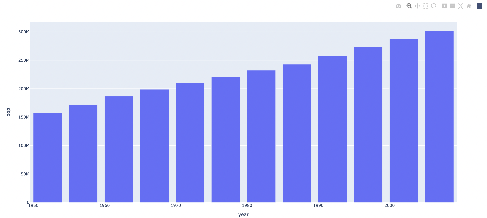
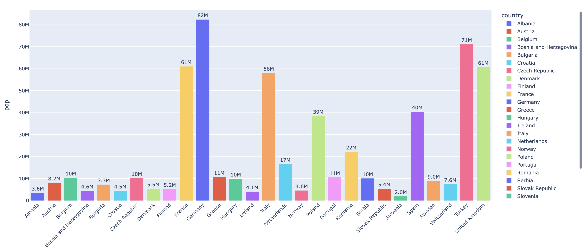

Get Started
Line Graphs
Bar Graphs
Histograms
Scatter Plots
Pie Charts
Violin Plots
Box Plots
'Single query' here refers to importing the dataset using a single query.
We will use the gapminder function to import the required data.
In this program, we have imported only the data about the United States. It is similar to adding a filter to the data we need.
Here, df_us is the dataset. Let us now plot the bar graph. We will select the x-axis to represent the "year" feature and the y-axis to represent the "population" or the "pop" attribute.
Now, let us run the program.
Your output might be somewhat similar to that shown in the above image. It enables us to look at the given data from a different angle.
Let us plot the graph now.
Here, the text attribute indicates the text of the graph; the color attribute (set to 'country') will produce different colors for countries.
We can later update the attributes (like label, color, etc.) by the following using the '.update_traces' functionality.
The graph should look somewhat like this.
